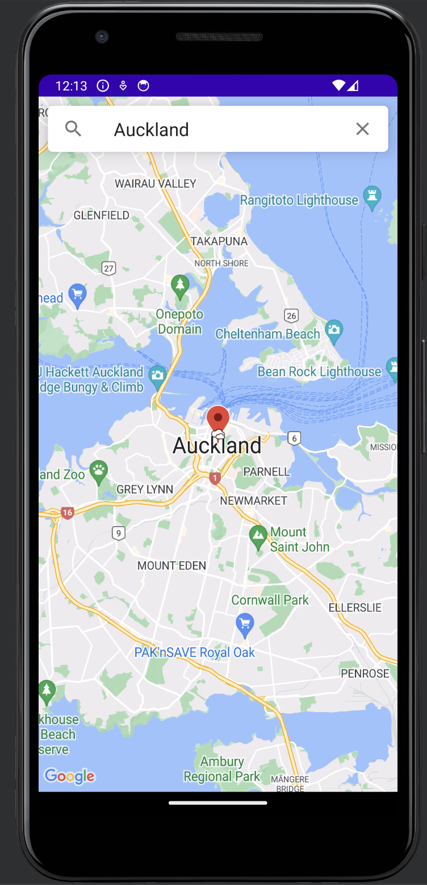

Maps and Cam app
Description
This Android app was a a group university project which utilizers the weather and cams API. The app allows the user to view city cameras within a given radius as well as veiw weather data. Junit testing was also done to ensure the application runs smooth and reliable.
Technologies Used
- Java
- XML
- Android Studio
- Junit
Fetures
- API calls
- uses user location
- Junit testing